How Anthropic uses Claude Code
Agentic Software Engineering at Scale
- 分类
- AI
- 来源
- YouTube
- 原文
- 整理
- 讲者
- Daisy Hollman
- 原片
- YouTube
先看这五句
- 够不着，就帮不上。开箱只有仓库和 shell。Slack、CI、仪表盘、文档、别的会话，你用来做事的通路，都该给它。
- 能力大约每四个月翻一倍，窗口几乎没动。定制发生在文本空间。不使用的就不付钱，KV cache 还不许随便重排前缀。
- 编程在仓库里，软件工程大多不在。试着一整天不离开终端。做不到的部分，模型也替不了你。
- 四个原语里，只有 hooks 真能扩。按提示成本：hooks 优于 skills，skills 优于 agents，agents 优于 MCP。为下一代模型建，不为上一代补洞。
- 2026 的瓶颈是人的注意力。2025 往模型里塞信息；现在要把模型正在做的事，更快送回给人。并行、worktree、fleet view，都是为这个最小的盒子服务。
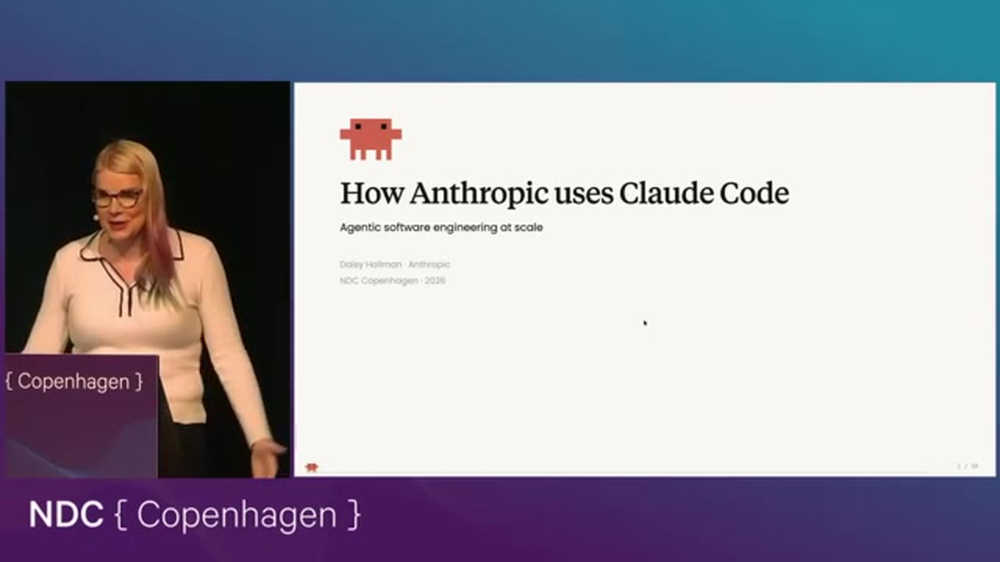
这是一份按全量字幕整理的阅读笔记。Daisy 反复强调：这是一场关于智能体软件工程的学术演讲，不是 Claude 广告。想法同样适用于 Copilot、Cursor、Codex。
讲者与立场
Daisy 在 Claude Code 上线前夕加入 Anthropic。产品内部原名 Claude CLI，她交了第一份 PR 的第二天就改了名。工程师们一度觉得 CLI 更体面，市场名却更好用。她主导了插件和 agent teams 的设计实现，插件是她最投入的部分：既关社区，也关可定制。
此前她在 C++ 标准委员会待了将近十年，当过几年主席，还做过超算上的并行与分布式编程。她关心的是完整规模的软件工程，不是讨喜的原型。她希望非技术、半技术的人也能把生产级软件做出来。软件工程师越来越像在给周围的人搭梯子。
路线很清楚：先对齐「智能体编程」是什么，再讲为什么必须定制，再把上下文窗口当作基本原语，然后拆插件由什么组成，最后讲 Anthropic 自己怎么跑、2026 往哪走。
从聊天机器人到智能体
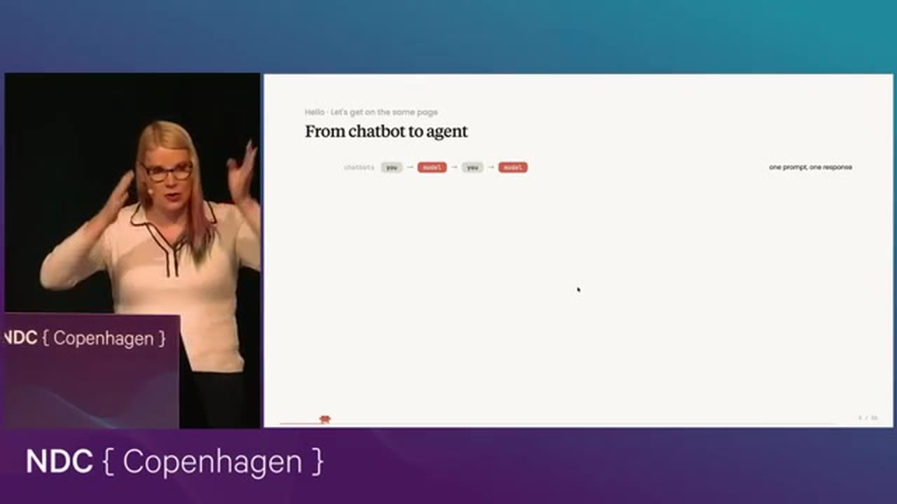
早期大模型交互就是人说话、模型说话、再轮到人。2024 年出现工具调用：模型可以让计算机去做一件事。一开始是一次调用、看结果、再决定要不要回给人。后来能根据第一次结果发起第二次、第三次。自主性够了，大家才需要一个新名字，于是叫它智能体。Daisy 不喜欢在定义上空转，这条演化链就够用。
编码智能体无非是把程序员的工具交给模型：shell、改文件、CI、运行、编译。她故意说 programmer，不说 software engineer。后面整场都在补这个缺口：编程活在仓库里，软件工程大多不在。
工具很原始
工具调用朴素得惊人。模型写出一段 JSON，harness 去执行，结果再塞回上下文。Bash 就是报一个命令，harness 跑完，把输出放进 tool result。智能体就是：看结果、再调用、继续转圈。
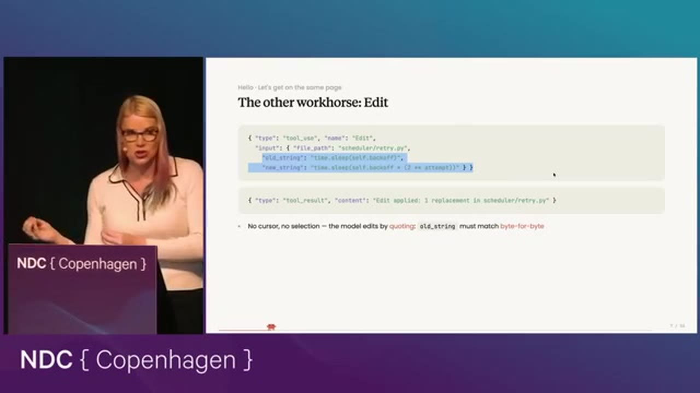
没有光标，没有选区，没有引用。就是查找替换。Daisy 的全部幻灯都是 Claude Code 做的。嵌套 JSON 那一页一次写成，零处 token 出错。她说这不像人类能逐字符做到的事。Edit 出错大约从 2025 年 2 月或 4 月起就很少见了，这种能力容易训练。
类比：智能体改文件更像 Unix 的 ed，不是 VS Code。ed 到图形 IDE 之间那截差距，就是机会，而且全发生在文本空间。没有人真正想清楚「模型的 IDE」该长什么样。红线提示对智能体意味着什么，后面用 hook 回答。
能力在增长
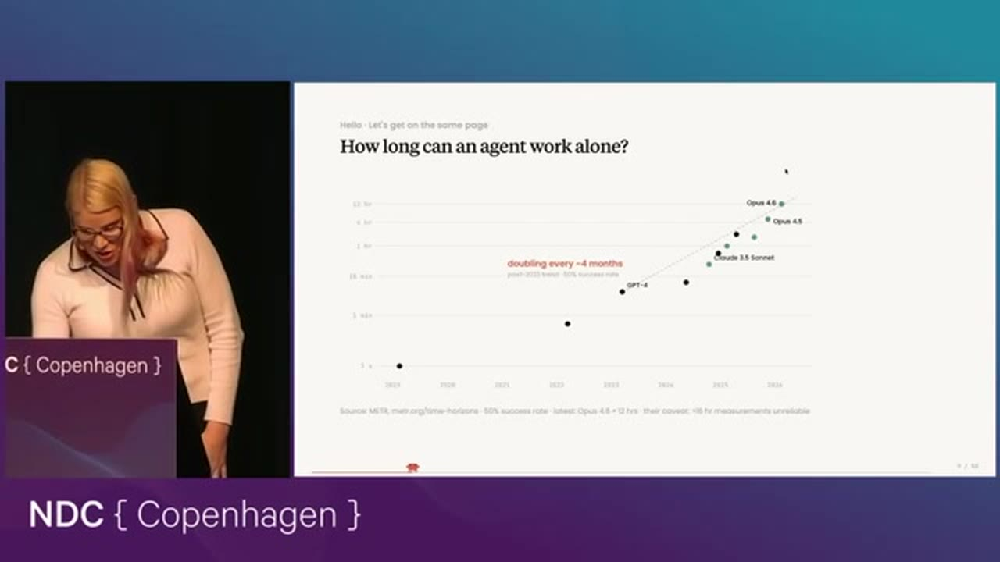
工具能变复杂，能撑住的任务时域就变长。METR 那张图停在今年年初，因为「什么算 16 小时任务」的误差已经大到图表几乎不好用。讲的时候已经晚了两个模型版本：Opus 4.7 和 4.8。趋势本身从 2022 年到 2026 年相当稳。终会平台，但若在七八十年代押摩尔定律马上停，你会站在很不同的位置。至少值得按「再续一两年」来想工作方式。
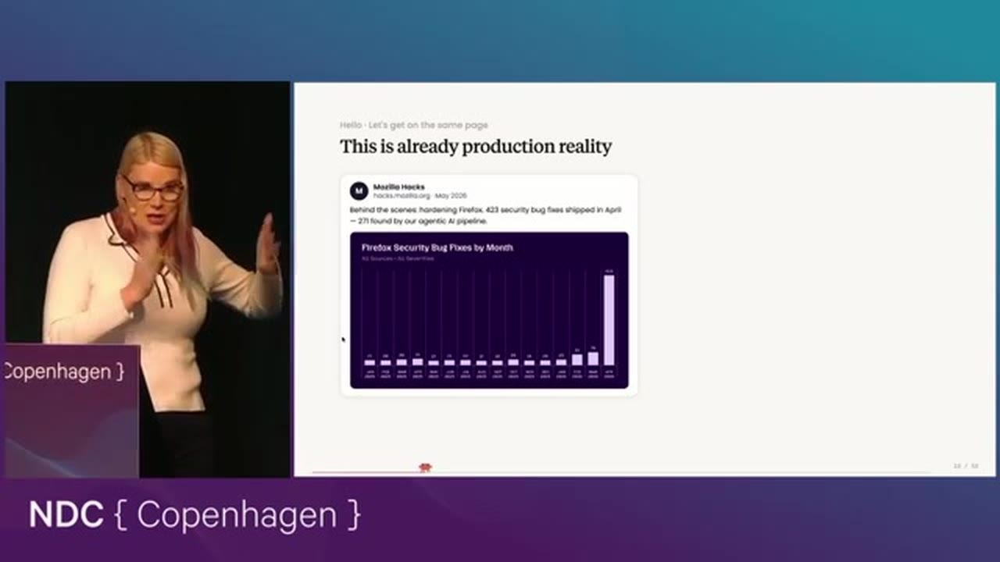
有人说智能体做不了有用的事，她就指这类图。没人把调试当娱乐。后面整场都立在一个假想上：如果有一天智能体写代码比你更好，工程该长什么样。她从前会讲 C++ 元编程的边角，也曾以写代码为傲。过去一年半让她相信，那已经不是重点。不接受这个假想也完全成立；接受的人，就一起想 harness 和上下文工程如何撑住单体仓库级项目。
为什么要定制
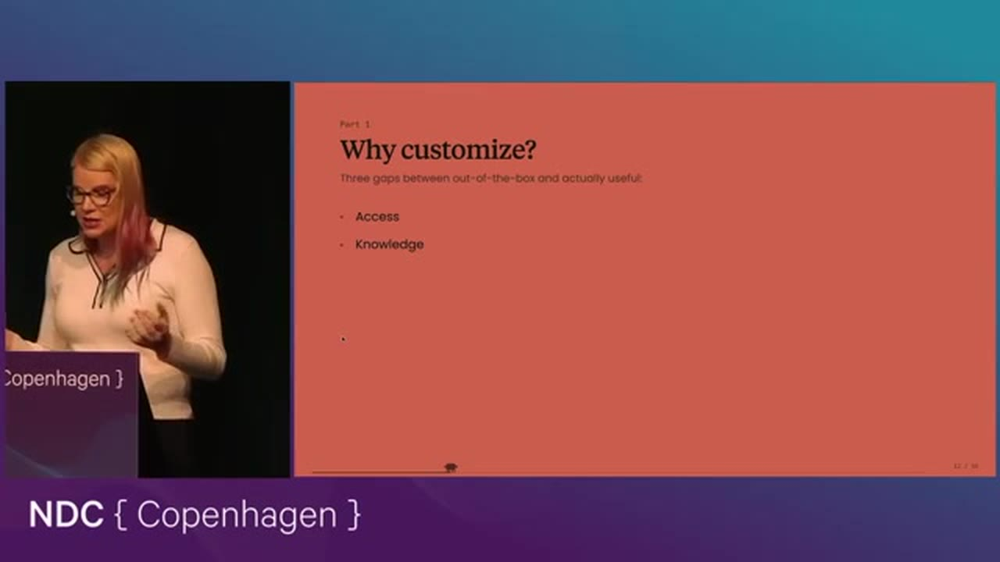
如果 Claude 做不到你能做的每一件事，它就没法跟你一起做你的工作。
开箱只能看见一个仓库加一个 shell，默认还不准离开启动目录。安全上说得通，但没有职业工程师会整天只看这一个文件夹。这也能解释 0 到 1 原型为什么显得特别成功：人做也更简单，受困的上下文对智能体伤害更大。高质量、大规模的软件工程很少能待在这个盒子里。
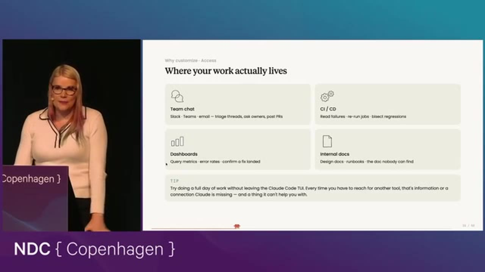
源码是编程。软件工程远不止编程。目标不是替换自己，是把自己乘起来。一个值得做的实验：试着一整天不离开终端。做不到的部分，Claude 也没法替你做。Slack 回不了，它就看不到那条线程。CI 失败还要你复制进提示词，那一步就仍在你身上。
知识这边，人们爱说「训练数据里没有」。更硬的事实是：有些东西根本训不进去。仓库惯例公司之间不同；制度记忆是两个季度前试过、从未见光的东西，即便模型完美也要有入口；上周刚改的东西撞上训练截止；还有内部 API、内部词汇、设计文档里的定义以及去哪找它们。定制就是补上模型天生知道的，和团队实际知道的，中间那截。漂亮说法叫 in-context learning，落地就是文本文件。权值发布时冻结。微调接口还在收窄。几乎所有定制都发生在文本空间。程序员本来就会驾驭文本。
智能体的红线提示，是 PostToolUse hook：工具结果后面追加一段你提供的文字。类型检查、lint、CLAUDE.md 里写了它却没做的事，都可以在犯错当下塞回去，而不是等稍后编译再浪费一轮推理。更快让智能体变好的，常常不是更聪明的模型，而是更紧的反馈环。这些脚本你多半已经有了。
工具分两种。一种补偿智力不足，一种随智力一起放大。给初级工程师加锁，资深之后就要换一套。更好的是那种轻推、那种提醒：资深仍会犯错，也知道何时不是错。她要人建第二种，而且要为两代之后更强的模型建，不只为现在这代补洞。
上下文窗口是一个盒子
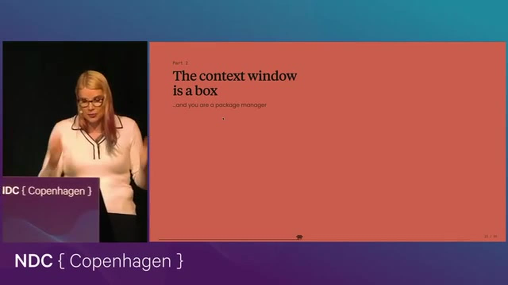
过去一年能力从花哨补全冲到长时域自主干活，窗口大小几乎没动。第一批 100 万 token 窗口出现在 2024 年末；2025 年 2 月前沿仍约 100 万；现在还是大约 100 万。任务变长，往盒子里放什么就要更精。整仓塞进去这条路很早就不通。
一切都在抢同一块地：system prompt、工具定义、CLAUDE.md、skills、读过的文件、工具结果。前面堆得越多，后面能干活的地方越少。每项定制都在跟「做事的空间」竞争。有人反感「上下文工程师」这个头衔。Daisy 认为它就是软件工程：教初级把活干好，只不过初级现在是智能体。其实资深一直在干这件事，只是现在每一层都要会。
她的类比是：像在一块极小的嵌入式板上跑现代包管理。普通电脑上菱形依赖可以并排引进两个版本。上下文里不行，必须判断哪一条更相关，其余留下。原则是不使用的就不付钱。零开销，否则很快见底。
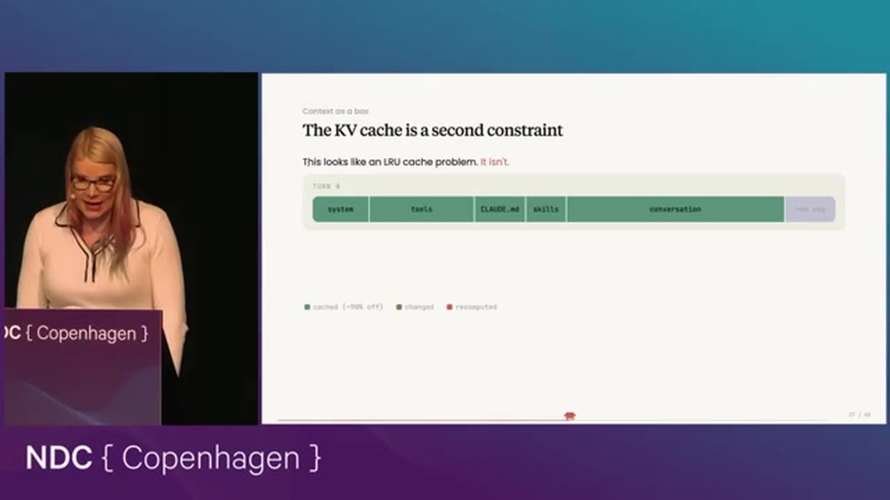
这层约束谈得少，却决定成本。现代模型的下一 token 预测，前缀一致才便宜。空间紧、有的相关有的不相关，直觉会拿 LRU：换入、换出，像 CPU 缓存。问题是：前面必须一字不差，这次预测才能复用。前缀一变，代价可以到约十倍；每个工具调用都这么干，账单会炸。早期 Cursor rules 一类按相关性换进换出，很快发现极贵。这不是简单的 LRU 问题。
插件原语：能不能扩
插件是企业级定制的机制。她追问的是：1 亿行单体仓库，或 5000 个仓库各自提供 skills、MCP，能不能扩？下面四个原语，逻辑也能挪到别的抽象上。
MCP
MCP 把更多工具 schema 加进 system prompt。JSON 协议，传输无关，客户端很轻。对外集成、任意客户端或聊天机器人都要能用、鉴权在服务端，它是对的工具。公司内部开发环境里，如果你已经有 CLI，写一个技能讲清怎么用，往往更好。
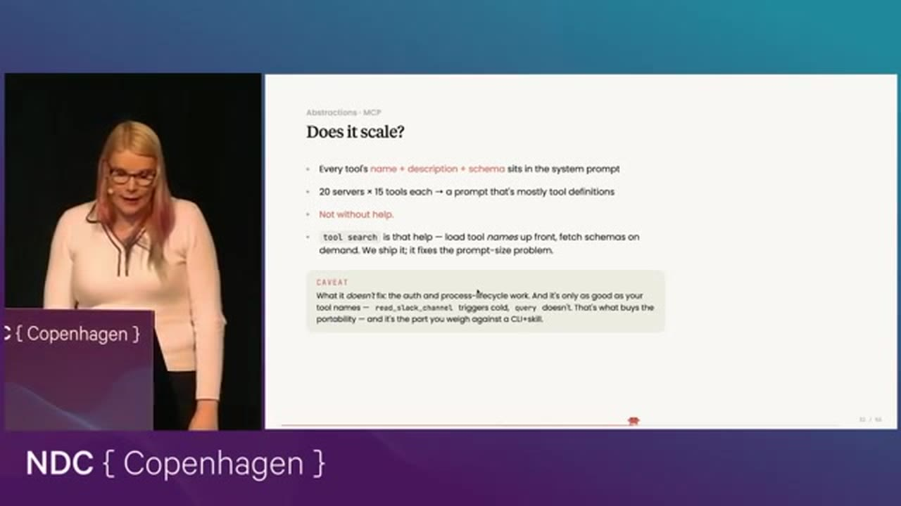
20 个 MCP 服务器、每个 15 个工具，窗口基本会被工具描述填满。它不能裸扩。正在做的 tool search 先加载名字，再给模型一把搜工具的工具。百万级工具仍会吃光窗口，但比名字加描述加 schema 好一些。名字写得越能让人想起去搜，越容易在对的时候被找到。
Skills
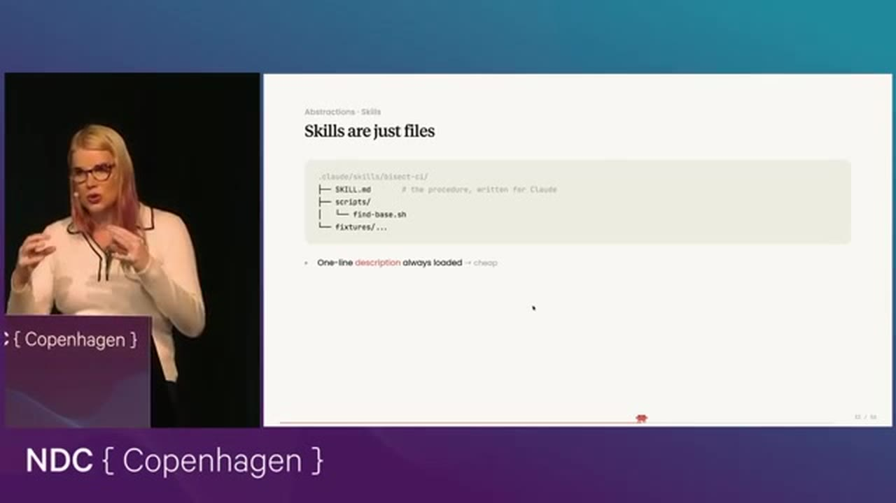
形态极简：一个文件夹，没有特殊协议。skill.md 的 front matter 里有 description，模型靠它决定要不要展开全文。同目录的其它资源它也知道怎么取。正文符合「不使用就不付钱」。描述却永远进 system prompt。10 万条技能，光描述就会吃掉窗口。对超大体量仍不够。目前没有层级，正在做。有人问要不要 skill search：也在做，但比 tool search 难，因为模型必须知道自己不知道。工具搜更易，模型更容易察觉自己做不到某事。
Sub-agents
描述同样进 system prompt，但不在当前窗口展开，而是开一个独立上下文，只回一份紧凑摘要。所以：skills 在上下文里，sub-agents 在上下文外。隔开窗口这一层其实更省，可描述字符串扩到成百上千、上万时，仍会占掉大块窗口。
Hooks
这是她最喜欢的抽象，因为 hooks 真的能扩。好抽象是：在判明相关之前，什么都不放进窗口。
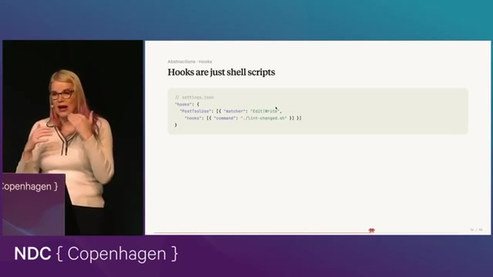
工具使用、用户提交提示、模型停下、上下文压缩，都可以触发。脚本按协议吃输入、吐输出，决定注不注入。Rust 项目上挂着一堆 JavaScript lint 技能，描述费照付，还得手关。Hooks 则是脚本一看不是 JS 就立刻退出，只花 CPU。CPU 比上下文宽裕。也可以把智能体塞进 hook，但要省着，token 烧得很快。模式是：调用、判断相关、不相关就快退。红线提示就住在这里。
四个原语怎么选
| 原语 | 怎样进上下文 | 扩到超大仓库时 | 更合适的时候 |
|---|---|---|---|
| MCP | 工具 schema 进 system prompt | 20 个服务器乘 15 个工具就会把窗口填满；tool search 只先加载名字 | 任意客户端都要能用，鉴权在服务端 |
| Skills | 描述常驻，正文按需展开 | 10 万条描述会吃光窗口；尚无层级 | 已有 CLI，用一段说明往往就够 |
| Sub-agents | 描述常驻，展开到独立窗口，回摘要 | 描述仍扩不到几千个 | 需要隔开上下文，只要压缩结果 |
| Hooks | 事件触发才注入，脚本可快退 | 能扩。不相关时只花 CPU | 红线提示、按相关性注入上下文 |
按提示成本排序：hooks 优于 skills，skills 优于 agents，agents 优于 MCP。为下一代模型建，不为上一代补洞。
不算好的插件原语
CLAUDE.md 最违反「不使用就不付钱」。若允许插件无条件在每次会话开头注入大段文字，活跃插件大概只能有 5 到 10 个。写起来极便宜，用起来极贵。仍可用 session-start hook 假装这么做，至少成本会被看见。
Memory 是模型自己维护的文本文件：让它写下，再在特定时刻读回。它不是上下文工程原语。超大尺度上，要把记忆和上下文工程分开。即便外形像 skills，两者也必须分开运转。
同时跑很多个 Claude
从这里再加速，只剩并行。一个人若能稳定管 20 个会话，产出可以接近管 5 个时的四倍。2026 的许多工作，是给开发者留下足够的认知空间，好在会话之间快速切换。
起步是 git worktree，避免会话互相踩文件。/rename 和 /color 该成为习惯：给窗口贴标签、上颜色。切过去时颜色先唤起记忆。对非色盲的人，颜色回忆往往比一段散文更快。
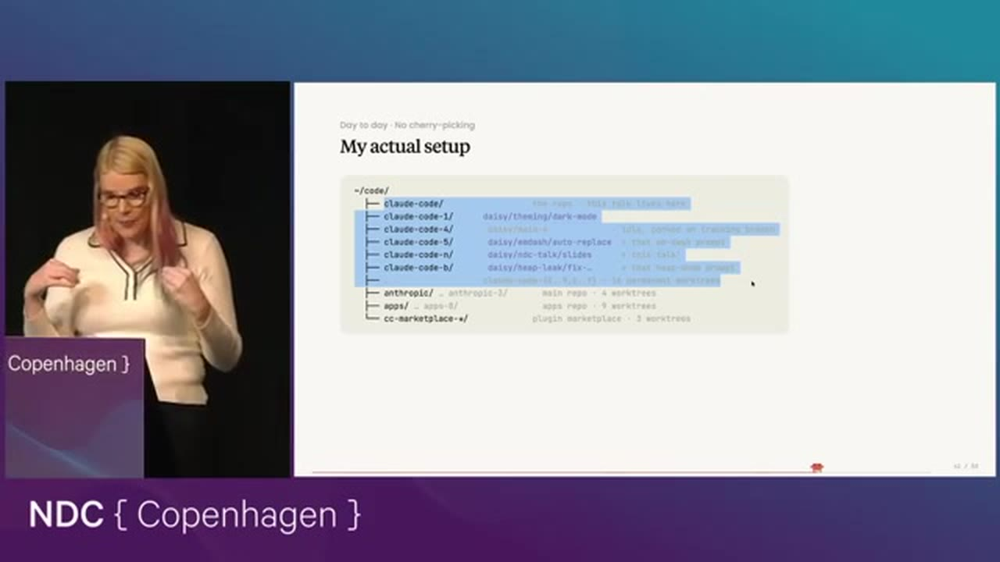
每个 worktree 停在一处，有一个长期负责维护它的智能体。对做过技术负责人的人，这很像一天里不断有人来汇报：持久身份降低负荷。它们像彼此独立的开发者，连跟踪上游也不会互相踩。
Agent teams 的底层是 send-message：一个会话给另一个发消息。可以是队长加队员，也可以是平级；发现了什么，分享或不分享都由你定。跨机器会话已经宣布，她那时刚休假回来，不确定是否已经上线。原则仍是：你能看见的，就该让它也够得着。另一个智能体若是你能看见的东西，就该给它这条通路。
/loop 大约两月前上线，是模型的 cron：比如每 10 分钟出现一条消息，也可以自己关掉。模型常在活没干完时睡着，这个能把它叫醒。相对人去轮询 CI 再复制粘贴，意外地便宜。模型也越来越会：三小时后才有结果，就给自己定三小时后的闹钟。
Auto mode 不是 YOLO。有分类器和多层护栏，会看你有没有真的授权去做危险的事。没有授权就拦住。它让 20 到 30 个智能体、/loop、通宵跑成为可能。代价大约多 10% 到 40%，视模型而定。
2026：把信息从模型送到人
2025 年的主题是把信息送进模型，弥补它还在婴儿期时的错误。2026 年她认为会反过来：把信息从模型送到人。模型变强之后，提示词质量越来越不是瓶颈。瓶颈是你切换上下文的速度，以及你多快能看清模型在干什么。
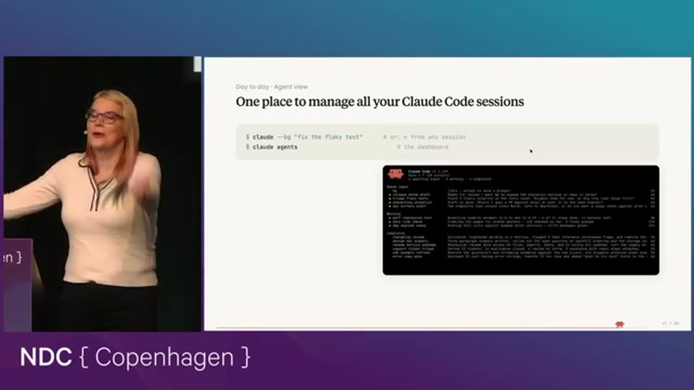
你的注意力，是整套系统里最小的那个盒子。
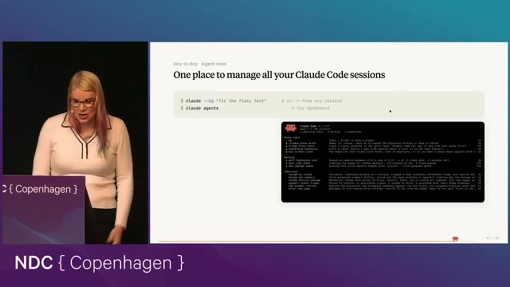
做这个界面的同事，有一周大约交了 1000 个 PR。分类器用很短的话说明模型刚做了什么、现在要什么。不必再开二十个标签页。
Remote control 是她日常在用的另一半：持久智能体跑在云上或开发机上，手机和桌面都能接手。这篇演讲的一部分，是她从酒店走向会场时，用手机跟开发机上的智能体写出来的。
三条带走
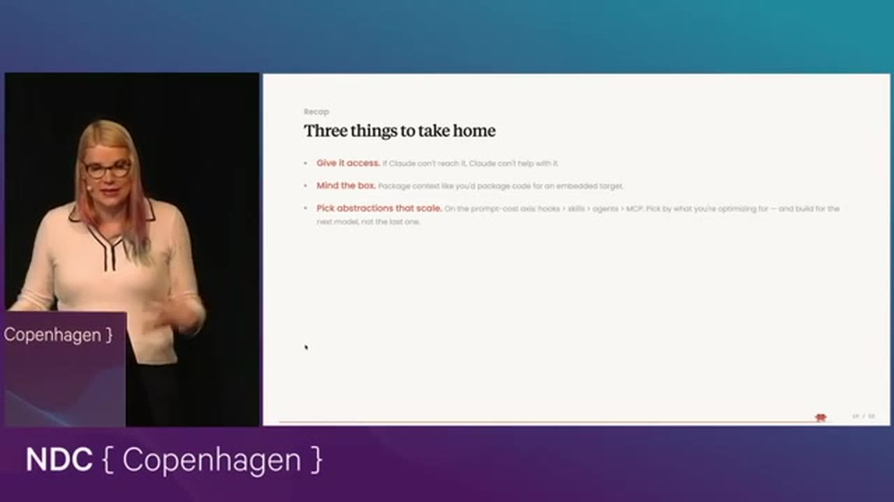